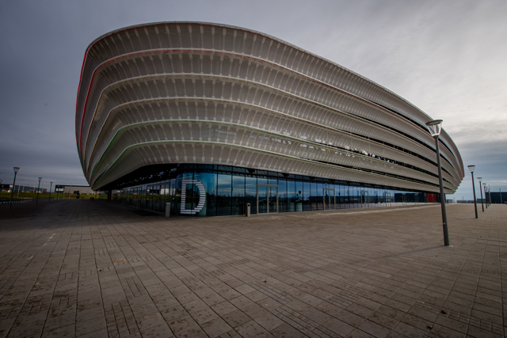

Május 22. és június 7. között Székesfehérvár a kilenctűs teke nemzetközi központjává válik, hiszen a város ad otthont a 2025-ös kilenctűs teke világbajnokságnak. Ezen a rangos eseményen nem csak női és férfi válogatott mérkőzések lesznek, hanem U15-ös és U19-es korosztály világbajnoksága is.
Pintyőke Marcell, a Magyar és a Nemzetközi Bowling Szövetség elnöke elmondta: „A világbajnokság szlogenje: „Ninepin hazatér”. Szeretnénk egy különleges és emlékezetes eseményt szervezni, hogy megmutassuk, Magyarország továbbra is a kilenctűs teke hazája.”

WCH 2025
Május 22. és június 7. között Székesfehérváron mérik össze tudásukat a világ legjobb kilenctűs tekézői, ugyanis a Királyok Városa ad otthont az idei kilenctűs teke világbajnokságnak.Cser-Palkovics András polgármester kiemelte, hogy ez a rendezvény több, mint egy nagy sportverseny a város számára: "A kilencpines bowling hagyományosan népszerű sport Székesfehérváron. Bízunk benne, hogy ez a világméretű esemény maradandó élményt nyújt a sportolóknak és a nézőknek egyaránt."
A világbajnokságot az teszi különlegessé, hogy nemcsak a felnőtt csapat világbajnokságokat, hanem az U15-ös és U19-es korosztály jelentős versenyeit is magában foglalja ezek mellet az ELSŐ U15 világbajnokságot is. A május 22. és június 7. között megrendezett tornán a világ legjobb kilenctűs tekézői érkeznek Székesfehérvárra.